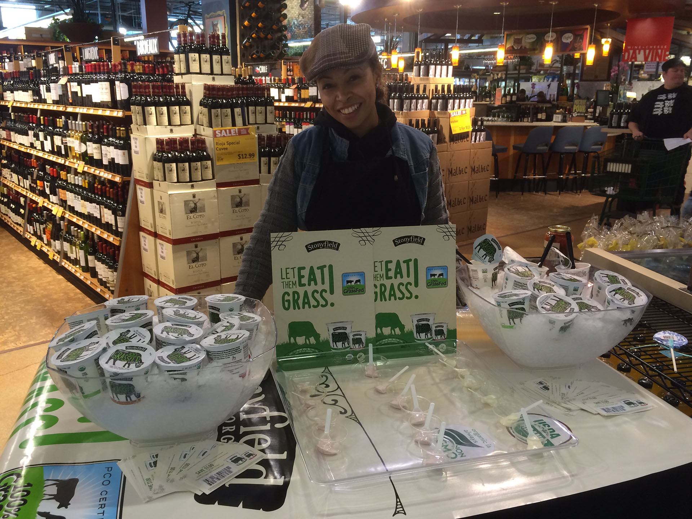
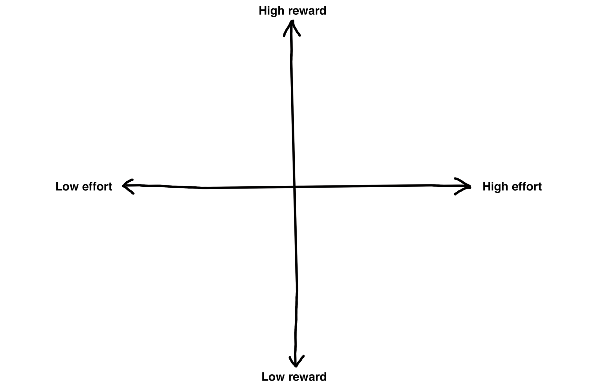

From User Testing To Prototypes: Making Observations Tangible
Designing for Digital 2016
John Jung / @johnjungdotus
Kathy Zadrozny / @_kzadrozny
#d4d16
April 6, 2016
Who are we?
John Jung

Kathy Zadrozny
Agenda
| 1:15 | Introductions |
| 1:15-1:25 (10 min) | Why prototypes? Why user testing? |
| 1:25-1:35 (10 min) | Our sample problem and research. Handouts: Research packets. |
| 1:35-1:45 (10 min) | Group discussions. |
| 1:45-1:55 (10 min) | 1) “Prototype-to-think” An introduction to making half page sketches to think through alternatives. Handouts: Three prompt cards, brainstorming, transforming ideas, morphology? |
| 1:55-2:40 (45 min) | Sketching half-page mockups to explore options. Ranking, voting, and discussing results. |
| 2:40-2:50 (10 min) | Break |
| 2:50-3:00 (10 min) | 2) “Prototype-to-communicate” Handouts: A pattern for a three-act skit. |
| 3:00-3:45 (45 min) | Develop skits. |
| 3:45-3:55 (10 min) | Break |
| 3:55-4:40 (45 min) | Presentations and discussion. |
| 4:40-4:45 (5 min) | Summary, more resources, going further. |
Why prototypes?


[image illustrating service design, app design, and other soluions]
Why user testing?
Our design process
- Familiarize yourself with research.
- Quickly draw out different potential solutions.
- Rank the solutions you generated.
- Decide which to try.
- Make a short skit to demonstrate how your solution works.
Our sample problem
Grocery stores and healthy eating
How might we...
create displays, apps and services that help a grocery store's customers make healthier food choices?
The research
Cornell Food Choice Research Group

Food choice scripts

Value negotiation

Eating maps

Food choice routines
The research continues: samples

Choose the right place.

Find high-traffic locations near the front of the store or along busy paths.
Choose the right time.

This granola display was very successful before a big football game- it seemed like people were looking for an alternative to traditional game day snacks.
Match customer needs.
Live conversations let product reprentatives focus on a benefit like taste, health, or cost that might make sense to a specific shopper.
“Would you like to try one?”

Often, people need a little encouragement to try something new.
Take a few minutes to familiarize yourselves with this research.
Read through it. Think about the process you go through when you make food choices at home, in a restaurant, or in the grocery store. Talk about it a bit in each of your groups.
Prompt cards
[image of prompt cards]
Example: "There's an app for that: The Mean Bean"


Now you try!
- Give every idea a short name.
Label it at the top of the page. - Draw. Sharpies and half-page pieces of paper keep you from getting too detailed.
- Take a step back once in a while to see what categories are emerging.
- Try for 20 ideas in 20 minutes.
| 10 mins | Draw half pages |
| 10 mins | Start transforming / clarifying ideas |
| 25 mins | Organize, vote, and narrow down to one idea. |
Sorting ideas by effort and reward

A trick for voting
- Each person gets three votes- put a dot on your three favorite ideas.
- If there is a tie, each person can put a dot next to their favorite.
- In the real world you might choose a mix of easy and hard ideas.
10 min Break!


Skits
Benefits of skits
- Build empathy.
- Focus on details of the experience.
- Make abstract ideas concrete.
- Provide an opportunity for stakeholder feedback.
Awesome Live Demo
Building your skit
- Envision the user's journey.
- Explore a range of possibilities. Focus on aspects where the most value is created.
- Researse. Find ways to focus on important benefits.
- Present. Try to communicate the user's state of mind.
Now you try!
Props
Sharpies, paper, humans.
Three-act Skits
Scene 1: Problem.
Scene 2: Interacting with the display.
Scene 3: Positive effect.
Be Concise
Communicate one aspect of the solution well.
10 min Break!

Awesome Final Products
Why User Testing to Prototypes?

Full-sized interactive prototypes


Participatory design
Interface Mockups
Sketch and InVision
Related tactics used in libraries
[Image - get from John]
Thanks.
Further Reading
- Books about design methods and creativity
- Design methods by jones
- 101 Design Methods by Vijay Kumar
- A Technique for Producing Ideas
- Books about drawing
- Drawing on the Right Side of the Brain
- Bridgeman’s Complete Guide to Drawing from Life
- Burt Dodson Keys’ to Drawing
- Nicolaides the natural way to draw